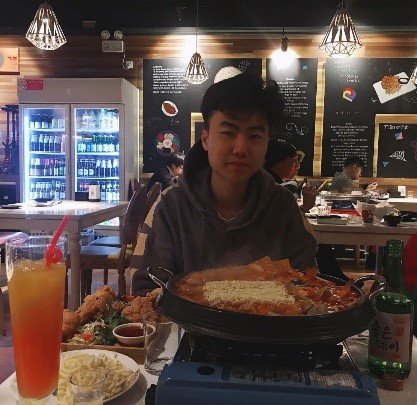

About
Hi! My name is Bowen Ding. I am currently a Sophmore student at Rose-Hulman Institute of Technology. I'm currently taking CSSE280 course this quarter, this course is about web introduction and it's very fun!
My major is computer science major and I also have a Japanese minor. For this quarter, I am taking an introduction to web design class, and I also had an Internship at Rose-Hulman Ventures for developing a mobile-app. I used react-redux as the framework and VS code for the environment.
My hometown is Beijing, China. As an International student here at Rose, I have stayed for an entire year here at Terre Haute due to the Covid-19 circumstance. I took some summer courses at Rose to spend my summer vacation. The fun thing that I’ve done during the summer break is that I drove for 4000 miles from Terre Haute to the Yellow Stone Nation Park and spent there for a week. I was amazed by the beautiful landscapes and I took a lot of pictures there. During my free time, I enjoyed doing sports, and I am also a big basketball fan, too. I am also very good at cooking, and I always cook a lot of food on weekends when I have the time.
